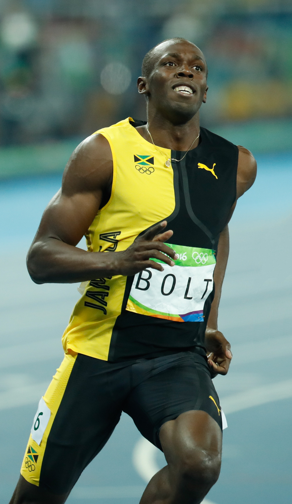

Usain St. Leo Bolt is a Jamaican sprinter who won gold medals in the 100-meter and 200-meter races in an unprecedented three straight Olympic Games (2008, 2012, and 2016).
Born on August 21, 1986, in Trelawny parish, Jamaica, Bolt is widely considered the greatest sprinter of all time.
